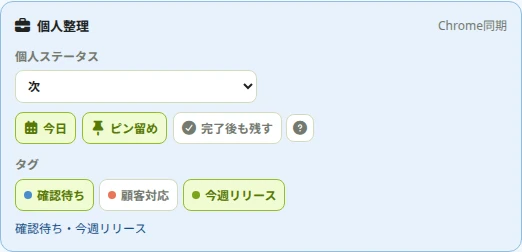
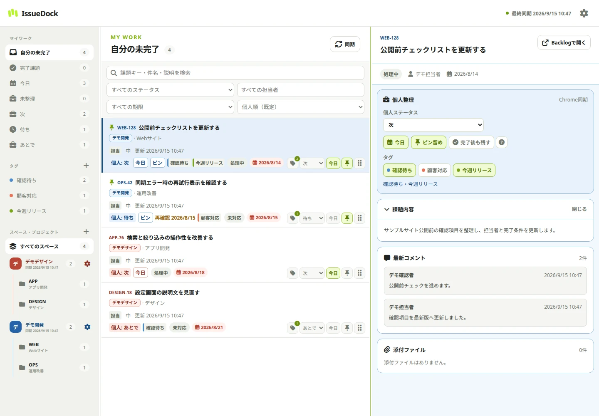
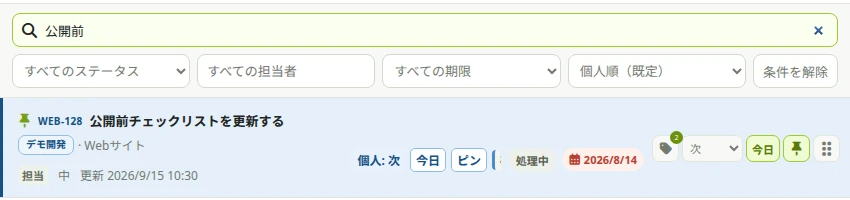
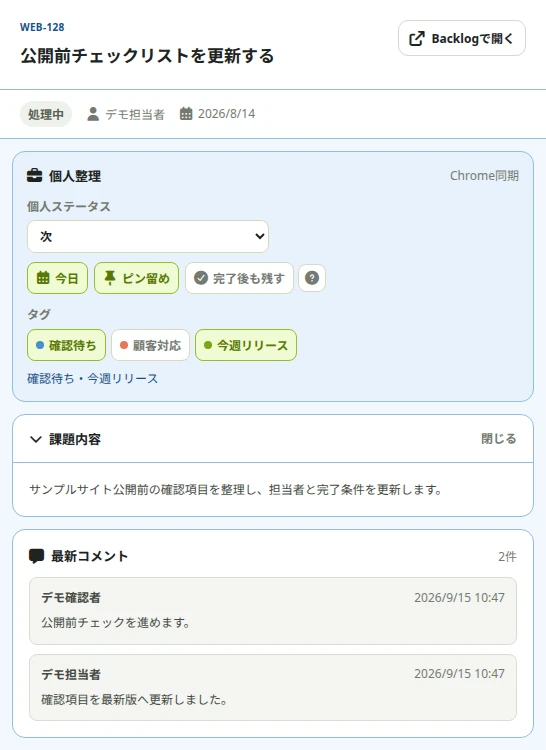
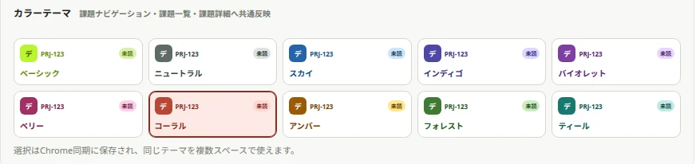
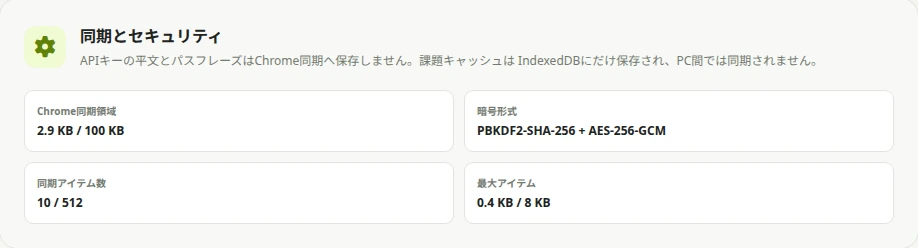
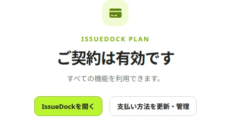

01 / FEATURES
今日の仕事を、自分の順番に。
「今日」と「次・待ち・あとで」を組み合わせて優先度を整理。個人タグとピンで、別スペースの関連課題も見失いません。

CHROME EXTENSION FOR BACKLOG
複数のBacklogスペースを横断して検索。今日・次・待ち・タグで、 会社やプロジェクトの枠を越えて自分の仕事を整理できます。

ONE PERSONAL WORKSPACE
IssueDockはBacklogの課題や運用ルールを書き換えません。各スペースの情報を読み込み、 自分だけの整理情報を重ねることで、毎日の「次に何をするか」を見やすくします。
FEATURES
複数スペースをまたぐ日々の作業を、1画面の流れにまとめます。
01 / FEATURES
「今日」と「次・待ち・あとで」を組み合わせて優先度を整理。個人タグとピンで、別スペースの関連課題も見失いません。

02 / FEATURES
課題キー・件名・説明を横断検索。ステータス・担当者・期限の絞り込みで、今確認したい課題へすぐにたどり着けます。

03 / FEATURES
一覧から課題を選ぶと、詳細と最新コメントを同じ画面で確認できます。個人整理を続けながら、次の行動を判断できます。

04 / FEATURES
ナビゲーション・課題一覧・詳細にスペースごとのテーマを反映。切り替えても、どの仕事を見ているか分かります。

05 / FEATURES
同じGoogleアカウントのChrome同期で、個人整理と暗号化した接続情報を共有。課題キャッシュは各端末に保存し、新しいPCではパスフレーズで接続情報を解除します。

06 / FEATURES
「プランと利用状況」で現在の状態を確認できます。画面は架空の契約状態の例です。実際の提供条件は利用規約・特定商取引法に基づく表記をご確認ください。

HOW IT WORKS
BacklogスペースURLとAPIキーを入力し、接続を確認します。
パスフレーズでAPIキーを暗号化し、保存方法を選びます。
課題を取得したら、検索・今日・個人ステータス・タグですぐ整理できます。
LOCAL-FIRST & PRIVATE
Backlogの課題・APIキー・個人整理データは運営者へ送信せず、端末内とChrome同期に保存します。 ログイン・契約管理にはIssueDock APIを使用しますが、広告・行動解析は行わず、監視ログへ個人情報や本文を記録しません。
プライバシーポリシーを読む →FAQ
送信しません。通信先は、利用者が登録して権限を許可したBacklog APIだけです。
個人ステータス・今日・ピン・タグなどはIssueDock内に保存します。Backlog側の課題を変更しません。
同じGoogleアカウントでChrome同期を利用している場合、個人整理データと暗号化した接続情報を同期できます。
いいえ。IssueDockは株式会社ヌーラボの公式製品ではなく、同社との提携・承認・推奨を示すものではありません。
GET ISSUEDOCK
Chrome Web StoreでIssueDockの詳細と提供状況をご確認ください。